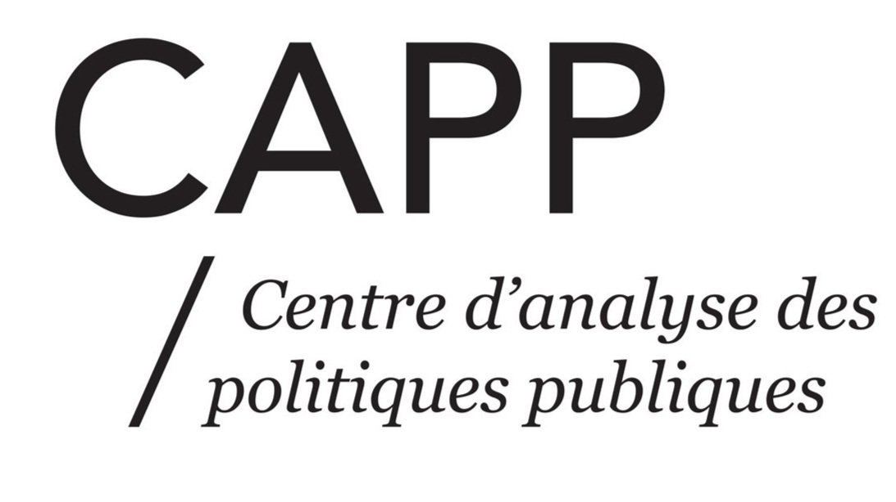
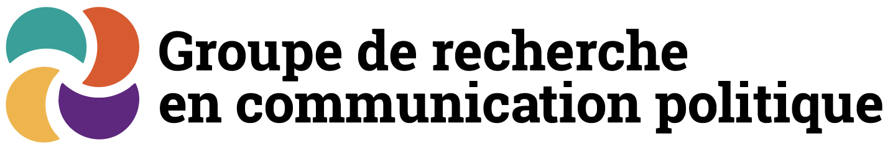
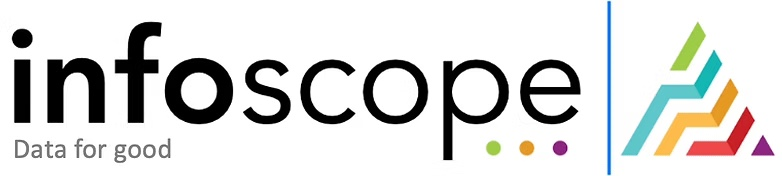

Porteur du projet
CLESSN

Le CLESSN contribue à la vision de Radar+ et au positionnement du projet dans un cadre de recherche appliquée sur les médias numériques.
Visiter le siteRadar+ est un projet de CLESSN et du CAPP ULaval, appuyé par le GRCP et le CSDC-CECD, avec la participation de Infoscope pour le développement.
Cette page souligne la contribution de chaque organisation qui soutient la recherche, l'infrastructure et la diffusion du projet.

Le CLESSN contribue à la vision de Radar+ et au positionnement du projet dans un cadre de recherche appliquée sur les médias numériques.
Visiter le site
Le CAPP ULaval appuie la dimension académique du projet et son ancrage dans les travaux de recherche en communication politique.
Visiter le site
Le GRCP soutient Radar+ en renforçant l'écosystème de collaboration autour des méthodes et des usages de la saillance médiatique.
Visiter le siteLe CSDC-CECD appuie le développement du projet et la mise en valeur d'outils utiles à la communauté de recherche et au public.
Visiter le site
Infoscope participe au développement de Radar+ afin d'assurer une expérience robuste, lisible et adaptée aux usages de suivi en continu.
Visiter le siteMerci à l'ensemble des partenaires et contributeurs pour leur confiance et leur engagement. Radar+ existe grâce à ce travail collectif, à la fois scientifique, technique et institutionnel.